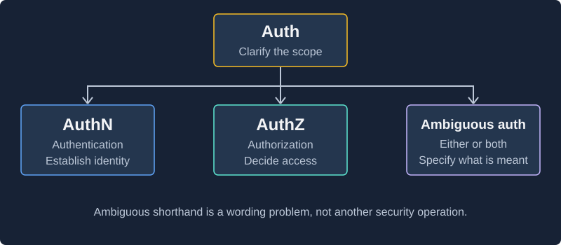
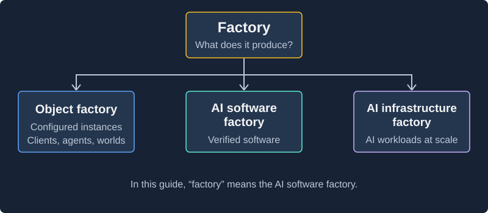
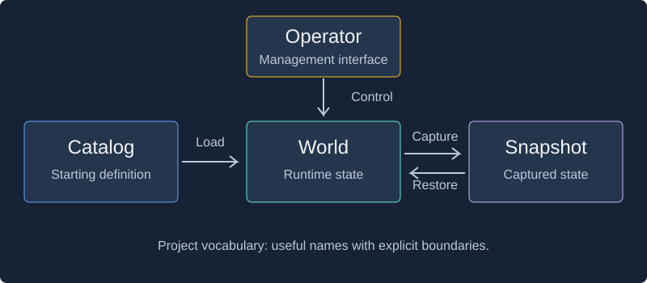

Names are useful when their boundaries are clear. This companion to Engineering at AI Speed covers the language of integration environments, requirements, shared identity, architecture, and review throughout the series.
The technical tables give working definitions consistent with common usage, rather than claiming that every tool uses each word identically. Project-local meanings and the series' own practice names are labeled separately. Describe the required behavior as well as naming it.
Start with domain meaning and identity, interfaces, data and runtime, requirements and ownership, architecture and verification, or review and release. The final section explains the working phrases used in this series.
Domain meaning and identity
| Term | Working definition |
|---|---|
| Catalog, general usage | An organized collection for discovery, classification, or lookup. A catalog can contain authoritative information; its name alone does not establish authority. |
| Registry | A maintained collection often associated with registration, identity, authority, or lifecycle management. Those responsibilities still need to be specified for the domain. |
| Product catalog, in the series example | A searchable aggregation of retailer listings, preserving source identifiers and observation times. Inclusion does not establish a canonical product identity. This is the example's domain definition. |
| Entity | A domain concept whose identity matters across changes to its attributes. The team must decide whether a record represents a retailer listing, a canonical product, or something else. |
| Retailer listing | A source-specific representation of an item carried by a retailer in the series examples. Two listings can refer to similar products without being the same entity. |
| Source identifier | An identifier assigned by an originating system, meaningful within that system's stated scope and lifetime. |
| Identity scope | The boundary within which an identifier distinguishes an entity, such as one retailer. Uniqueness within that boundary does not imply global uniqueness. |
| Canonical identity | The identity treated as the common reference for an entity within an agreed domain. Assigning one requires rules for authority, matching, and conflicts. |
| Uniqueness constraint | A rule preventing duplicate key values in a specified scope. Choosing the wrong key can enforce the wrong domain model perfectly. |
| Composite key | An identity or lookup key formed from multiple values, such as retailer plus source listing ID. Its adequacy depends on scope, stability, and identifier reuse. |
| Product matching / entity resolution | Deciding whether records refer to the same underlying entity. Similar names or repeated identifier strings do not independently establish that relationship. |
| Source of truth / authoritative record | The source or record designated to settle a particular fact or decision. Authority must be defined per concern; being centralized or first does not establish it. |
| Observation timestamp / freshness | When information was observed, and whether its age is acceptable for a use. A recent observation does not necessarily identify when the source last changed. |
| Semantics | The meaning of data and operations, including identity, absence, repetition, and ordering. Matching field types can leave these meanings unresolved. |
Interfaces and system boundaries
| Term | Working definition |
|---|---|
| API | An application programming interface: a defined way for software components to interact. An API is not necessarily an HTTP service. |
| Endpoint | An addressable interaction exposed by a service; for an HTTP API, the method and route together help identify the operation. |
| HTTP status / HTTP 503 | A response status conveys the result of handling an HTTP request. 503 indicates temporary service unavailability; retry suitability still depends on the operation and policy. |
| JSON | A text format for structured data. Valid JSON does not establish schema conformance or correct business meaning. |
| Serialization / deserialization | Converting values or state into a representation for storage or transmission, and reading that representation back. Version and format compatibility matter. |
| SDK | A software development kit, often including a client library that wraps a provider's API. It may add behavior such as retries that an integration must account for. |
| Provider / consumer | The component supplying an interaction and the component relying on it. A service may be a provider at one boundary and a consumer at another. |
| Adapter | A component translating between interfaces or representations. It cannot reconstruct discarded information without another source of that information. |
| Integration boundary | The point where separately implemented components exchange data or depend on each other's behavior. Shared meaning is part of the agreement at that boundary. |
| Distributed system | Components on separate processes or machines that coordinate through communication. Partial failure and uncertain remote outcomes affect the guarantees they can make together. |
| Ingestion / importer | Bringing source data into a destination for use. An importer implements that path, including the applicable retrieval, transformation, persistence, and progress behavior. |
| Concurrency | Multiple operations in progress over overlapping periods. Their ordering and interaction may affect state, failure behavior, and measurements. |
| Control plane | Mechanisms that configure, coordinate, and manage a system. In the API environment, world lifecycle and clock controls belong here. |
| Data plane | The path that performs the system's ordinary work under that configuration. In the example, importer requests to the emulated API use this path. |
| Pagination | Dividing a result collection into retrievable portions. Page boundaries and ordering can change when the underlying collection changes. |
| Cursor | A continuation value used to locate or resume retrieval under a provider's rules. It does not inherently guarantee stable ordering, unlimited lifetime, or snapshot consistency. |
| Update ordering | The rule determining how multiple changes are applied or which one takes precedence. Arrival time, source version, and observation time are different possible inputs. |
| Compatibility / compatibility layer | Compatibility is the ability to keep required interactions working across implementations or versions. A compatibility layer mediates differences within a stated scope. |
HTTP status semantics are defined by the protocol; recovery policy remains an application decision. RFC 9110: 503 Service Unavailable.
Auth: authentication, authorization, or both?
Typically, auth can mean: authentication, authorization, or an unspecified combination of identity and access features. It is shorthand whose intended scope needs clarification. The ambiguous use is not a third security operation; it is an unresolved meaning.

| Term | Working definition |
|---|---|
| Authentication / AuthN | Establishing the identity of a caller, such as a person, service, or agent. In the example, establish that a request comes from the inventory importer. |
| Authorization / AuthZ | Determining whether a requested action on a resource is permitted under the applicable policy. The importer may be allowed to read North's inventory without permission to modify it or read South's. |
| Auth, ambiguous shorthand | May refer to authentication, authorization, or the broader identity-and-access subsystem. “Add auth” does not specify which controls are required. |
Prefer authn and authz in requirements and architectural guidance. If a team uses auth specifically for authentication, document that convention. An authenticated agent can still lack permission to perform an action; credentials, tool availability, and authorization are separate decisions. These abbreviations and responsibilities follow Microsoft's authorization guidance.
Factory: what does it produce?
Typically, factory can mean: code that creates configured objects, a repeatable software-production workflow, or infrastructure that runs AI workloads at scale. Specify the output, inputs, and acceptance checks before choosing an architecture from the name.

| Term | Working definition |
|---|---|
| Object factory | Code responsible for constructing configured objects, such as an API client, an agent, or a test world. The broad term does not by itself specify the Factory Method or Abstract Factory design pattern. |
| AI software factory, working meaning in this guide | An organized, repeatable workflow using AI-assisted or agent-driven work to turn specified needs into verified software artifacts, with explicit review and release controls. This is a declared working meaning, not a universal standard. |
| AI infrastructure factory | An infrastructure-oriented use of the factory metaphor for compute, networking, storage, and software supporting AI workloads at scale. It does not necessarily describe a software-development workflow. |
“AI factory” has no single meaning across the industry. NVIDIA's AI factory description emphasizes infrastructure, while Microsoft Agent Factory names an offering for building and scaling agents. A product name does not establish a universal architectural definition.
For the series' software-factory meaning, ask: What does it produce, what enters the process, and what evidence makes an output acceptable? Calling a workflow a factory does not establish autonomy, quality, or production readiness.
Data, setup, and runtime
| Term | Working definition |
|---|---|
| Dataset | A collection of data, whether raw, curated, captured, or generated. |
| Runtime state / stateful behavior | Runtime state is information retained by a running system that affects its behavior. Stateful behavior depends on relevant prior events as well as the current input. |
| Initialization | Establishing a system's starting conditions, potentially including data, identifiers, time, and scheduled work. Equal business data does not guarantee identical runtime conditions. |
| Seed data | Data used to initialize a system; it need not be small. |
| Random seed | Input that initializes a pseudorandom generator. It does not control all sources of nondeterminism. |
| Fixture | Known conditions for a test, potentially including data, configuration, dependencies, and cleanup. |
| Scenario | Starting conditions, actions, environmental events, and expected outcomes used to exercise a situation. |
| Snapshot | Captured state at a point in time, within an explicit scope. Restoration and replay guarantees must be defined. |
When someone says seed, establish whether they mean seed data or a random seed. Neither the word nor the size of the input establishes deterministic execution.
Vocabulary local to the API project
| Term | Meaning here | Boundary |
|---|---|---|
| Catalog | Curated starting definition used to initialize a world. | Not a universal meaning of catalog, and not necessarily a complete scenario. |
| World | Instantiated runtime environment and its state. | The name alone does not guarantee isolation, determinism, or completeness. |
| Operator | Management interface for world lifecycle, inspection, export, and clock control. | Does not imply the Kubernetes Operator pattern. |

Kubernetes uses Operator for software extensions built around custom resources and control loops. Kubernetes Operator documentation.
Later articles also use operator in its ordinary human sense: someone running or supervising an import. The person, the project's management interface, and a Kubernetes Operator are three distinct uses of the word.
Dependency replacements
A seam makes substitution possible; a test double supplies the replacement behavior. A component boundary can be useful for integration without necessarily providing such a substitution mechanism.
| Term | Working definition |
|---|---|
| Test double | Replacement for a production dependency used in testing. |
| Seam | A point where a program's behavior can be varied or replaced without editing the code at that point. Useful for substituting dependencies, controlling time, or introducing test failures. |
| Enabling point | The place where the behavior used at a seam is selected, such as dependency configuration or a build setting. |
| Stub | Supplies configured responses. |
| Mock | Verifies expected interactions. |
| Spy | Records interactions for inspection. |
| Fake | Working implementation with simplifying shortcuts. |
| Emulator | Emphasizes compatible externally observable behavior within a stated scope. |
| Simulator | Models behavior under specified conditions; can also provide an emulated interface. |
The test-double distinctions follow the Meszaros/Fowler taxonomy. Product names may use “mock” more broadly. Martin Fowler: Test Double.
For the importer, a call through an API-client interface can provide a seam. Dependency configuration selects the real provider client or an emulator client while the importer's business logic stays the same. This follows Michael Feathers' seam model. People also use “seam” loosely for a boundary between components or teams; clarify whether actual behavior substitution is intended.
Contracts and evidence
| Term | Working definition |
|---|---|
| Schema | Structural rules and constraints for data or messages. |
| API contract | Stated interface expectations, potentially including operations, errors, and behavior. |
| Contract test | Executable checks of specified expectations at an integration boundary. |
| Consumer-driven contract testing | Consumers describe the interactions they need; provider verification checks that the provider supports those expectations. The evidence covers the verified interactions and states. |
| Conformance testing | Checks an implementation against a stated specification or standard. |
| Characterization testing | Captures the behavior of an existing system, including quirks. |
| Differential testing | Compares systems under equivalent inputs and relevant conditions. |
| Test oracle | Mechanism used to judge whether an outcome is acceptable. |
| Invariant | Property that must remain true within the defined model. |
| Corpus | Collection of test material such as captured exchanges and boundary cases. |
| Provenance | Origin and transformation history of evidence or data. |
| Golden master | Approved comparison baseline; approval does not prove correctness. |
| Fidelity | Closeness to a target along specified dimensions. |
| Parity | Agreement within an explicitly stated comparison scope. |
Documented, observed, and assumed are evidence labels used in the API discussion. Documented means a source states the behavior; observed means a captured execution demonstrated it under particular conditions; assumed means the model relies on it without sufficient confirmation. None is a universal certification of correctness, and documented behavior can disagree with observations.
Contract-testing approaches differ. Consumer-driven testing requires provider verification to establish support for the consumer’s interactions. Pact documentation.
Reproduction and failure
| Term | Working definition |
|---|---|
| Record and replay | Capture interactions and reproduce them later, subject to matching and scope rules. |
| Determinism | Same relevant initial conditions and inputs produce the same observable result within the execution model. |
| Virtual clock | Controlled time source for modeled or tested behavior. |
| Partial failure | Some parts of an operation succeed while others fail or become unreachable. |
| Idempotency | Repeating an operation has the same intended effect as performing it once. |
| Deduplication | Detecting repeated inputs or work to prevent unwanted duplicate effects. |
| Checkpoint | Persisted progress used to resume work. |
| Resumability | The ability to continue interrupted work under a defined recovery model. Saving progress alone does not establish that no required work can be skipped or repeated unsafely. |
| Persistence / durability | Persistence stores state beyond the immediate execution; durability describes committed state surviving specified failures. Name the storage configuration and failure assumptions. |
| Commit | The point at which a transaction's changes are accepted under the storage system's guarantees. A successful remote response and a local commit are different events. |
| Transaction / transaction boundary | A transaction groups changes under stated guarantees; its boundary identifies what participates. A local database transaction does not automatically include another service. |
| Atomicity | The all-or-nothing property for changes within a defined operation or transaction boundary. It does not imply that all work across a distributed workflow shares that boundary. |
| Side effect | An observable change caused by an operation, such as storing a record or sending a notification. Repeating one effect safely does not establish that every effect is safe to repeat. |
| Safe reprocessing | Repeating previously attempted work without violating the agreed outcomes. Establish which entities and side effects are covered; this is a behavioral description, not a delivery guarantee. |
| Reconciliation | Comparing states and correcting missing or divergent data. |
| Fault injection | Deliberately introducing faults to test behavior under those conditions. |
| Fault schedule | The specified points, times, or conditions at which an exercise injects faults. It is part of a reproducible scenario when fault timing matters. |
| Isolation, for test environments | Separation that prevents relevant state or activity in one exercise from influencing another. State, clocks, queues, storage, and dependencies may need separate boundaries. |
| Repeatability / reproducibility | Ability to rerun an experiment and obtain comparable results under stated conditions. Disciplines use these words differently; specify which inputs, versions, timing, and environment must be preserved. |
Recorded responses do not automatically cover arbitrary request histories. WireMock record and playback. Time control requires components to use the controlled abstraction. Microsoft FakeTimeProvider guidance.
Transaction guarantees apply to participating work, with durability depending on the storage system's configuration and failure model. PostgreSQL: Transactions.
Recovery and consistency
| Term | Working definition |
|---|---|
| Retry | Attempting an operation again under a defined policy. |
| Transient failure | A failure expected to be temporary under the relevant model. A familiar error code is not sufficient evidence that repeating every operation is safe. |
| Timeout / operation budget | A timeout limits waiting for an event or attempt. An overall operation budget bounds the combined time allowed for attempts and delays. Define how the limits interact. |
| Retry budget | A bound on retry work, such as attempts or elapsed time. The Episode 4 example allows three total attempts, including the first; that is an illustrative choice. |
| Cancellation | A request to stop work under defined semantics. It can prevent further attempts without proving that an in-flight remote operation had no effect. |
| Backoff | Increasing the interval between attempts. |
| Jitter | Varying intervals to reduce synchronized retries. |
| Circuit breaker | Temporarily restricting calls to a persistently failing dependency. |
| Backpressure | Slowing incoming work to match downstream capacity. |
| Eventual consistency | Replicas converge under the model’s assumptions when updates cease; reads can temporarily be stale. |
A timeout does not establish that the remote operation had no effect. Microsoft Retry pattern. Recovery mechanisms have different purposes. Microsoft transient fault guidance. Eventual consistency is a consistency model, not a label for arbitrary API inconsistencies. Microsoft consistency levels.
Measurements
| Term | Working definition |
|---|---|
| Harness | Surrounding machinery that prepares, drives, and observes execution. Qualify the term: a test harness, benchmark harness, and agent harness serve different purposes. |
| Test harness | Arranges test conditions, drives the system under test, and collects results for evaluation. The test oracle determines whether those results are acceptable. |
| Benchmark harness | Generates a defined workload and records measurements under stated environmental conditions. Measurement does not establish correctness by itself. |
| Agent harness | Runs the interaction loop around a model, managing relevant context, tool execution, state, and execution controls. Its responsibilities and guarantees must be specified. |
| Workload | Operation mix, size, arrival pattern, concurrency, duration, and other conditions of demand. |
| Benchmark | Performance measurement under a defined workload and environment. |
| Load test | Examination under specified or expected demand. |
| Stress test | Examination beyond intended capacity. |
| Soak test | Sustained examination to expose accumulated problems. |
| Latency | Elapsed time for a defined operation. |
| Throughput | Completed work per unit time. |
| p95 / p99 | Percentiles of an observed latency distribution; define the measurement population. |
| Open workload | Arrivals scheduled independently of completion. |
| Closed workload | New work depends on completion of existing work. |
| AI eval | Evaluation of an AI system’s performance on defined tasks and criteria; distinct from API conformance or throughput. |
| Completeness | Presence of all records or results required by a defined source scope, time boundary, and acceptance rule. Equal counts alone do not establish equal contents. |
| Measurement population | The operations or observations included in a metric, including success and failure handling and the measurement window. Percentiles need this context. |
Choose a workload model that reflects the question being measured. Grafana k6 workload models.
These harnesses can work together: an agent harness might invoke a benchmark harness that exercises an importer through an emulator. The harness is distinct from the model it calls and from the environment where tools execute. Anthropic's managed-agent architecture gives a concrete example of these responsibilities.
Requirements and decision ownership
| Term | Working definition |
|---|---|
| Requirement | A needed capability, outcome, or constraint that the implementation must satisfy. A proposed mechanism may leave the intended result unspecified. |
| AI agent | An AI-based system that can interpret a task and use available tools to take steps toward it. Capabilities and autonomy vary; generated decisions do not confer organizational authority. |
| Outcome | The observable result the requester needs, such as recovering unfinished work without a full manual restart. |
| Acceptance criteria | Conditions used to decide whether the requested result is acceptable. They should distinguish the intended behavior from plausible unwanted alternatives. |
| Scope / exclusion | Scope defines the work's boundary; exclusions identify work outside it. A blocking dependency should be surfaced rather than ignored or silently added. |
| Constraint / guarantee | A constraint limits acceptable choices or behavior; a guarantee is a property the system commits to under stated conditions. Both need a defined scope. |
| Assumption / unknown | An assumption is treated as true for reasoning without necessarily being established; an unknown is explicitly unresolved. Either may require investigation before implementation can rely on it. |
| Boundary example / counterexample | A concrete case that exposes an interpretation at its limits, or an outcome that must not be accepted. These are descriptive terms for examples used throughout the series. |
| Decision rights | The authority to make a particular decision and the boundaries of that authority. Implementation access does not automatically confer it. |
| Accountable owner / decision ownership | A named person or role answerable for resolving and maintaining a decision. The owner may need substantial input from others. |
| Domain, service, and interface owners | Roles responsible for domain meaning, a service's behavior, or an agreement between services, respectively. Teams must assign their actual authority; these are not universal job titles. |
| Authorship | Producing a change. It identifies contribution but does not settle authority over every consequence. |
| Escalation / delegation | Escalation brings a decision outside current authority to the appropriate owner; delegation explicitly gives another person authority within a defined boundary. |
| Prototype / technical spike | A limited experiment used to learn about a design or feasibility question. Its assumptions and unresolved decisions must be assessed before adoption. |
| Handover | Transfer of work with its behavioral changes, assumptions, evidence, limitations, and maintenance or operational responsibility. |
Architecture and executable verification
| Term | Working definition |
|---|---|
| Architecture decision record (ADR) | A record of a significant decision, its context, status, and consequences. It preserves reasoning but does not itself enforce the decision. |
| Superseded decision | A decision replaced by a later one. Keep the earlier rationale and point to the current decision so contributors can distinguish history from active guidance. |
| Dependency / dependency rule | A dependency is reliance on another component or resource. A dependency rule constrains permitted relationships, such as domain code not importing a provider SDK. |
| Architecture test / structural check | An executable check of a specified architectural property, such as permitted package dependencies. Structural checks do not establish all runtime behavior. |
| Repository guidance / agent instructions | Project instructions describing definitions, decisions, constraints, and verification steps. They guide behavior; they are not access controls or proof that a check ran. |
| Behavioral test | A test that evaluates observable behavior against expected outcomes at a defined boundary, rather than only checking internal implementation steps. |
| Integration test | A test exercising interactions between components. Identify which components and dependencies are real and which are replaced. |
| Regression test | A check intended to detect the loss of previously expected behavior. Its value depends on whether that behavior and its oracle remain appropriate. |
| Test-driven development (TDD) | Developing through a meaningful failing test, the implementation needed to pass it, and appropriate refactoring while preserving the behavior. Adding passing tests afterward is a different sequence. |
| Mutation testing | Deliberately modifying an implementation and observing whether tests detect the changes. Detection gives evidence about the exercised mutations, not proof of complete correctness. |
| Fixture failure / skipped check | A fixture failure means the test setup did not support the intended exercise; a skipped check did not execute that exercise. Neither establishes that the product behavior passed. |
| CI (continuous integration) | Frequent integration supported by automated feedback such as builds and tests. A CI workflow's existence does not establish that its result blocks merge or deployment. |
| Required status check / merge gate | A configured condition that must be satisfied for a change to enter a protected integration path, subject to the platform's result semantics and bypass rules. |
| Deployment gate | A condition enforced before a change reaches an environment. It is separate from a merge check unless the actual release configuration connects them. |
ADRs retain architectural reasoning. Michael Nygard: Documenting Architecture Decisions. Structural checks can enforce specified dependency rules. ArchUnit User Guide. Mutation tools distinguish detected, undetected, and unexercised changes. Stryker: Mutant States and Metrics.
A required check is a configured control, not a synonym for any CI job. Inspect the actual acceptance and bypass behavior. GitHub: About Protected Branches.
Review, release, and operational feedback
| Term | Working definition |
|---|---|
| Thin vertical slice | A small implementation that crosses the layers or components needed to demonstrate one meaningful behavior. Small file count alone does not make a slice complete. |
| Pull request / diff | A pull request proposes changes for integration; a diff shows the changes between specified revisions. Review needs the surrounding behavior as well as the changed lines. |
| Verification evidence | Actual observations or check results supporting a stated claim. Include the revision, environment, scenario, and limitations needed to assess the claim. A plan to run a command is not its result. |
| Independent evidence | Evidence whose justification does not simply repeat the implementation's unverified assumption. A second agent using the same assumptions does not automatically supply it. |
| Release readiness | An assessment that the change can be introduced, operated, observed, and recovered from under agreed conditions. Passing tests supplies part of that evidence. |
| Rollout | Introducing a change to an environment or population, potentially in stages. Define who observes it and what stops further expansion. |
| Canary release | Limited exposure of a change evaluated before wider rollout. Its usefulness depends on representative exercised behavior, an appropriate comparison, and relevant measurements. |
| Monitoring / operational signals | Collecting and evaluating observations about a running system. Signals must connect to the outcome under review, such as incomplete imports or stale inventory. |
| Rollback | Returning an application or configuration to an earlier state. It does not necessarily reverse persisted data changes or external effects. |
| Data migration / data repair | A migration transforms persisted data or structure to a new model; repair corrects affected data. Either may be necessary when an identity or recovery decision changes. |
| Compensating action | An action intended to counteract the business effects of prior work. It may differ from restoring the exact original state and can itself fail. |
| Feedback loop | Using observed results to revise the decisions, model, implementation, or checks that shape subsequent work. |
Canary evidence depends on the population, comparison, duration, and measurements. Google SRE Workbook: Canarying Releases. Compensation needs its own business rules and recovery handling. Microsoft: Compensating Transaction.
Working phrases used in this series
These are practical labels, not claims of standardized methods or additional components implemented by the API project.
| Phrase | Meaning in the articles |
|---|---|
| Alignment | Shared understanding of the consequential outcomes, meanings, boundaries, and decisions a change must preserve. |
| Implementation brief | A compact statement of outcome, scope, constraints, examples, failure behavior, evidence, and unresolved decisions. |
| Friction audit | Examining a shortened or removed activity to identify the useful information it once exposed and where that information will surface now. |
| Review checkpoint / interpretation review | A deliberate opportunity to challenge an assumption or decision before work expands. This is a process checkpoint, distinct from persisted ingestion progress. |
| Boundary agreement | A shared description of the entity, identity, repetition, absence, ordering, and responsibilities at an integration boundary. |
| Executable architecture / executable constraint | Connecting architectural intent to checks that evaluate relevant properties. It does not mean all architectural judgment is automatable. |
| Decision-to-evidence map | A link between a decision's reason, the required property, the check, where it runs, and who maintains it. |
| Review loop | Review of interpretation, a complete slice, implementation increments, merge evidence, release readiness, and observed results. Scale the process to the uncertainty and consequences. |